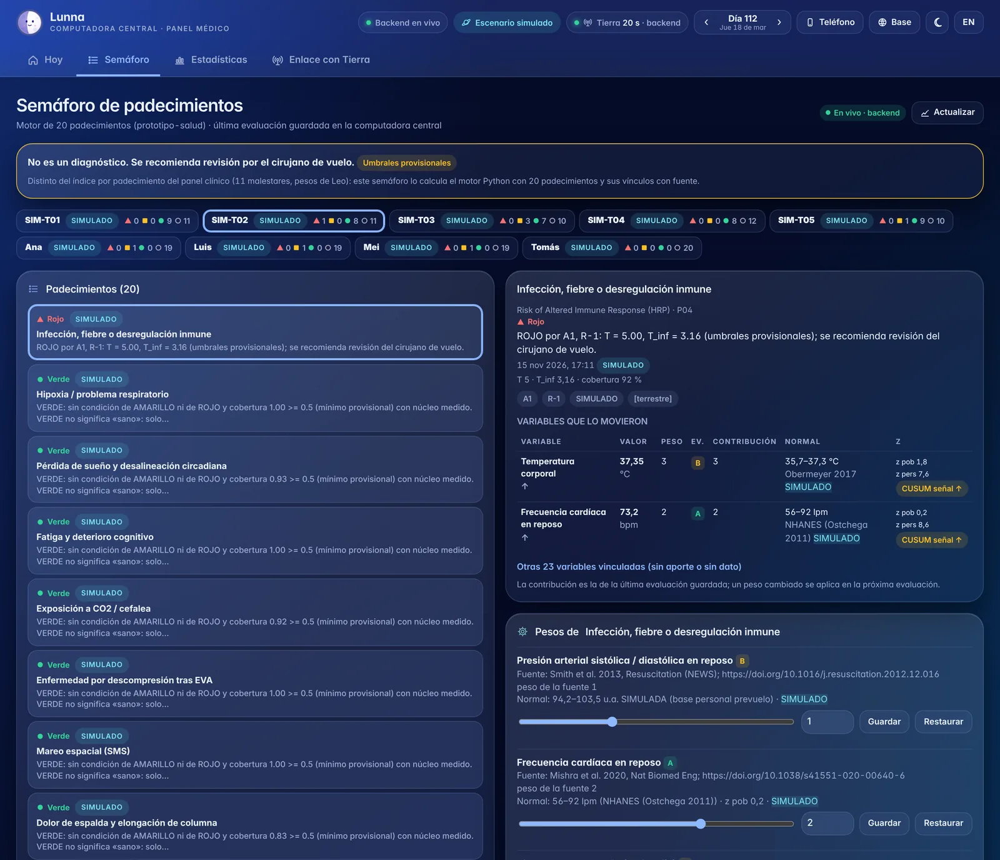
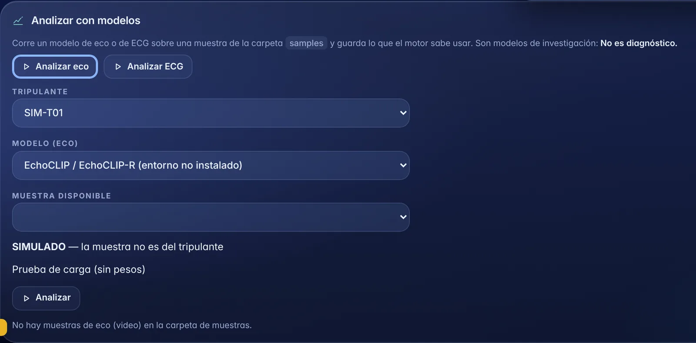

La mediana de la ventana contra lo esperado para ella
Mediana de las últimas 24 h contra la predicción y su banda. Detecta derivas lentas que nunca cruzarían un límite clínico: la fatiga acumulada del día 112.
NASA Space Apps Challenge 2026 · Equipo Monarcas
Lunna aprende el normal de cada astronauta y avisa antes de que un problema crezca. Son las interfaces reales, funcionando ahora con la tripulación simulada.
En 30 segundos
Duerme y entrena mientras sus sensores transmiten. Una tormenta solar la manda al refugio y se pierde el enlace con Tierra: Lunna guía la emergencia a bordo, paso a paso, y Mei la ayuda. Tierra se entera después, con el retraso de la luz.
Probar la simulación ↗scenario hypoxiaPor qué importa tu propio normal
Dos tripulantes simulados, hombres de 30 años, marcan 85 lpm de frecuencia cardiaca en sueño el día 5 de vuelo. Contra el promedio poblacional (NHANES) ambos dan z 1,32: normal. Contra su propia base, no.
Contra el promedio poblacional (NHANES) ambos dan z 1,32: normal. Fuente: prototipo-salud/validacion/ejemplo_aprende.py, 14 noches prevuelo. Datos SIMULADOS: no son astronautas reales.
Cómo funciona, matemáticamente · 1 de 2
Una actualización bayesiana normal-normal en tres capas. Cada fuente de evidencia pesa según su precisión, y toda predicción trae su banda del 95 %.
Literatura (prior poblacional) · k misiones previas · n días propios de calibración.
|z| < 2 · 2 ≤ |z| < 3 · |z| ≥ 3. La calibración se congela el día 14: si siguiera aprendiendo, una deriva lenta se volvería «su nuevo normal».
Ilustrativo: el cambio propio de esta persona (−3 % en sus misiones y en sus días de vuelo) es inventado para que se vea cómo sus datos desplazan a la literatura. El cálculo es el mismo de lunna.ts.
Cómo funciona, matemáticamente · 2 de 2
Lo personal detecta lo lento; el umbral clínico detecta lo agudo. Ninguno de los dos basta solo.
Mediana de las últimas 24 h contra la predicción y su banda. Detecta derivas lentas que nunca cruzarían un límite clínico: la fatiga acumulada del día 112.
Una SpO₂ de 87 % es grave aunque sea «normal para ti». Cada límite dice de dónde viene: [A] NASA o validado en astronautas, [T] clínico de Tierra. Un artefacto suelto no dispara.
y la alerta dice el motivo: personal, umbral o ambos.
Computadora central · pestaña Semáforo
El motor de padecimientos evalúa 20 padecimientos (P01–P20), cada uno ligado a un riesgo de salud documentado por NASA (HRP u OCHMO). Cada color llega con las variables que lo movieron: valor, peso, nivel de evidencia, valor normal y la fuente de ese rango.

350 ligas entre padecimientos y variables · evidencia 9 A · 31 B · 310 C (C es juicio del equipo) · pesos 1 a 3, editables por el cirujano de vuelo. Todos los cortes son provisionales; el semáforo no muestra ninguna probabilidad.
Modelos de predicción que usamos
Valor esperado y banda del 95 % de cada signo vital para esa persona en ese entorno (Tierra, órbita, tránsito, Luna, Marte).
El normal de cada tripulante antes del lanzamiento, encogido hacia la referencia cuando hay pocos datos (Sottas 2007). Se congela al despegar.
Media adaptativa que sólo aprende de días estables, tras 72 h de cuarentena y con tope de ±1,5 DE.
Acumula desviaciones pequeñas y persistentes respecto al prevuelo. Sólo lo reinicia una revisión humana.
Dos canales que no se suman: pesos editables por el cirujano de vuelo y razones de verosimilitud publicadas.
NeuroKit2 para ECG; PanEcho, EchoNet-Dynamic, EchoCLIP, EchoPrime y MedSAM2 para eco. Su salida es evidencia de nivel N4: nunca da rojo por sí sola.
Los parámetros (α, k, h, cuarentena, cortes del semáforo) son provisionales y están documentados como supuestos. Detalle completo en modelos y algoritmos.
Computadora central · tarjeta «Analizar con modelos»
Desde el semáforo, la médica de a bordo puede analizar una muestra y sumar el resultado a la evaluación. Son modelos de investigación, no diagnóstico: lo que sale de un modelo entra con el nivel de evidencia más bajo y, solo, no da ROJO ni respalda un VERDE.
No es un modelo entrenado: con NeuroKit2 calcula frecuencia cardiaca, variabilidad (HRV), PR, QTc y una bandera experimental de ritmo irregular. Picos R en registros públicos de PhysioNet (MIT-BIH 100, 201 y 203): sensibilidad 0,9987 / 1,0000 / 0,9191; valor predictivo positivo 1,0000 / 0,9718 / 0,9892. PR y QTc no están validados; la bandera marca irregularidad del ritmo, no fibrilación auricular.
Una inferencia real en la PC de un integrante del equipo (Windows, RTX 4050): 42,8 s en CPU y 17,4 s con CUDA. El registro de esa corrida no está en el repositorio. No es validación.
Sin inferencia real. Solo pasaron una prueba de carga (arquitectura sin pesos y tensor aleatorio), que no es inferencia. Los pesos de los modelos de eco suman unos 6,3 GB.

Validación
Tres niveles que no deben confundirse. Lunna cumple el primero, tiene el segundo a medias y no tiene el tercero.
Laboratorios abiertos de la misión Inspiration4 (NASA OSDR, OSD-569 y OSD-575): 4 civiles, 3 días en órbita, 278 filas.
80 / 80
celdas en GRIS con solo datos reales. Hay 3 tomas antes del vuelo y el motor pide 5: se niega a colorear en vez de inventar.
Prueba de sensibilidad con un mínimo de 3 tomas: al regreso (R+1) baja el potasio en dos tripulantes (C002, z −3,5; C003, z −2,4, con 3,0 mmol/L). Ningún ROJO. Límites: n = 4, sin datos en vuelo y sin signos vitales. No prueba nada clínico.
| Suite | Pruebas | Linux | Windows |
|---|---|---|---|
| Backend | 97 | 97 aprobadas | 85 aprobadas · 12 omitidas |
| Modo simulación | 4 | — | 4 aprobadas |
| Motor del navegador y valor normal | 25 | 25 aprobadas | 25 aprobadas |
| Prototipo de salud (pytest) | 148 | — | 131 aprobadas · 11 omitidas · 6 fallas de entorno |
0 fallidas en el backend en los dos sistemas. En Windows se omiten 12 porque necesitan openssl (8) o los entornos Python de los modelos (4). Las 6 fallas del prototipo son del entorno de esa máquina, no del código.
Galería
NASA Space Apps Challenge 2026 · 15 de noviembre de 2026. Haz clic en una foto para verla en grande.
Límites de cabina de NASA-STD-3001; los clínicos marcados [A] o [T].
Eventos solares de NASA DONKI; validación con los laboratorios abiertos de Inspiration4 (NASA OSDR). La tripulación de la demo es simulada.
La decisión es de la médica de a bordo y del cirujano de vuelo. Prototipo de hackatón, no validado para uso médico.
Equipo Monarcas
 JulioComputadora central, LUNNA, ESP32 y simulación@DinDevJ
JulioComputadora central, LUNNA, ESP32 y simulación@DinDevJ IkerVariables, motor de padecimientos e Inspiration4@ikerus
IkerVariables, motor de padecimientos e Inspiration4@ikerus LeoPesos por padecimiento, central y base en Tierra@LeoFlores1000
LeoPesos por padecimiento, central y base en Tierra@LeoFlores1000 DianaApp del celular y asistente Lunna@dianacamposrosas
DianaApp del celular y asistente Lunna@dianacamposrosas KatyRequisitos, experiencia y diseño de la app@aguilarcalderonkaty-boop
KatyRequisitos, experiencia y diseño de la app@aguilarcalderonkaty-boop FaniReloj, integración de interfaces y documentación@121074-fani
FaniReloj, integración de interfaces y documentación@121074-fani